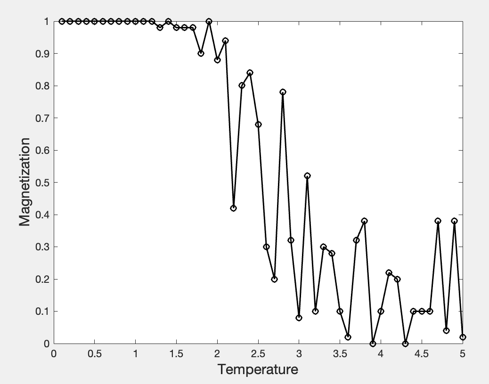

Ising 模型的 Monte Carlo 模拟
1. Ising 模型
Ising模型，是物理学家 Lenz 和 Ising (Lenz的学生) 在 1920 年左右提出的用来模拟磁性的格点模型。其考虑的是离散网格模型，在每一个格点处有一个自旋，取值只能取1或-1，分别代表自旋向上和向下。考虑最近邻相互作用，相互作用强度为$J_{ij}$。此外，每个自旋还受到外部磁场的影响，其强度为$h_i$。体系总哈密顿量为 \begin{align} H(\sigma) = -\sum_{\braket{i,j}} J_{ij} \sigma_i \sigma_j - \mu \sum_j h_j \sigma_j. \label{eq1} \end{align} 其中 $\braket{i,j}$ 代表最近邻，$\mu$ 代表磁矩，$\sigma_i$ 只能取 $\pm 1$。温度 $T$ 下，系统不是永远待在能量最低的构型上，而是在热涨落下在各种构型之间切换。根据统计物理，正则系综在热平衡时构型 $\sigma$ 出现的概率为 \begin{align} P_{\beta}(\sigma) = e^{- \beta H(\sigma)} / Z_{\beta}. \label{eq2} \end{align} 其中 $\beta = (k_B T)^{-1}$，归一化常量/配分函数为 \begin{align} Z_{\beta} = \sum_{\sigma} e^{- \beta H(\sigma)}. \label{eq3} \end{align} 对于函数 $f$，其平均值为 \begin{align} \braket{f}_{\beta} = \sum_{\sigma} f(\sigma) P_{\beta}(\sigma). \end{align} 当$J_{ij}$大于0时，称为铁磁，反之为反铁磁。而对于正的$h_j$，格点$j$上的自旋趋于朝向正，反之向负。
2. 蒙卡模拟
蒙卡的核心思想是重要抽样，这是因为随机抽样得到的很多样本本质是在做无用功，而在高维问题中，要遍历所有可能的状态又是不现实的。实现这一思想的方法是Metropolis算法，其基本流程如下
- 选定一个初态，计算能量
- 随机翻转某一个自旋，并计算翻转后的能量
- 如果能量降低则保持翻转，如果能量升高则按$e^{- \beta (H' - H)}$概率保持翻转
- 重复以上步骤，可以通过收敛判断，也可以通过设置一个迭代步数
3. 代码
以下是一个简单的 Matlab 代码实现二维 Ising 模型的 Monte Carlo 模拟，计算不同温度下的磁化强度。
clear; clc; close all
N = 10;
J = 1;
nsteps = 80000;
T_sec = 0.1:0.1:5;
ts = zeros(size(T_sec));
aa = 1;
for T = T_sec
%initial spin
spins = 2 * (rand(N,N) > 0.5) - 1;
%metropolis
for n = 1:1:nsteps
%choose a spin in random
i = randi([1,N],1,1);
j = randi([1,N],1,1);
%the difference of energy
dE= 2 * J * spins(i,j) * (spins(mod(i,N)+1,j) + spins(mod(i-2,N)+1,j) + spins(i,mod(j,N)+1) + spins(i,mod(j-2,N)+1));
%metropolis rule
if dE < 0
spins(i,j) = -spins(i,j);
elseif rand() < exp(-dE/T)
spins(i,j) = -spins(i,j);
end
end
% total spin
ts(aa) = abs(sum(sum(spins))/N/N);
aa = aa+1;
end
% plot
plot(T_sec, ts, 'o-', 'linewidth', 1.5, 'color', 'k')
xlabel('Temperature','FontSize',15);
ylabel('Magnetization','FontSize',15)
结果大致如图所示：可以看到在临界温度附近（约 $T \approx 2.5$），体系的磁化强度出现快速下降。
题外话：配分函数和自由能
有了配分函数就可以求出自由能 $F$ \begin{align} F = - k_B T \ln Z_{\beta}. \label{eq4} \end{align} 这可以从定义式出发得到 \begin{align} F \equiv U-TS \end{align} 其中 $U$ 是平均能量，$S$ 是熵。 首先有波尔兹曼分布 \begin{align} p_s=\frac{e^{-\beta E_s}}{Z}. \end{align} 两边取对数 \begin{align} \ln p_s = -\beta E_s - \ln Z. \end{align} 把它乘上 $-k_B p_s$ 并对所有状态求和 \begin{align} -k_B \sum_s p_s \ln p_s = -k_B\sum_s p_s(-\beta E_s-\ln Z) = k_B\beta\sum_s p_s E_s + k_B(\ln Z)\sum_s p_s. \end{align} 注意到 $\sum_s p_s E_s = U$（平均能量），$\sum_s p_s = 1$，而左边 $-k_B \sum_s p_s \ln p_s$ 正是统计物理里熵的定义。所以有 \begin{align} S = k_B\beta U + k_B\ln Z. \end{align} 把它代入自由能定义 $F=U-TS$，并用 $\beta=1/(k_BT)$ \begin{align} F = U - T (k_B\beta U + k_B \ln Z) = U - T (\frac{U}{T}+k_B\ln Z ) = -k_BT \ln Z. \end{align}